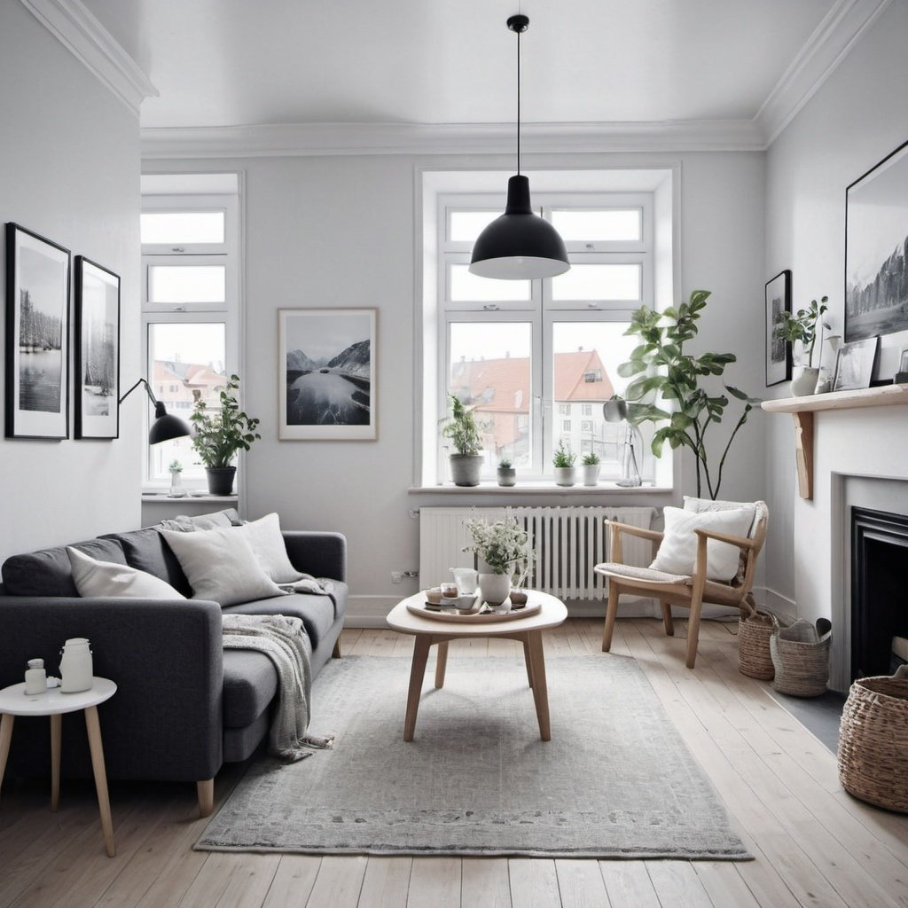
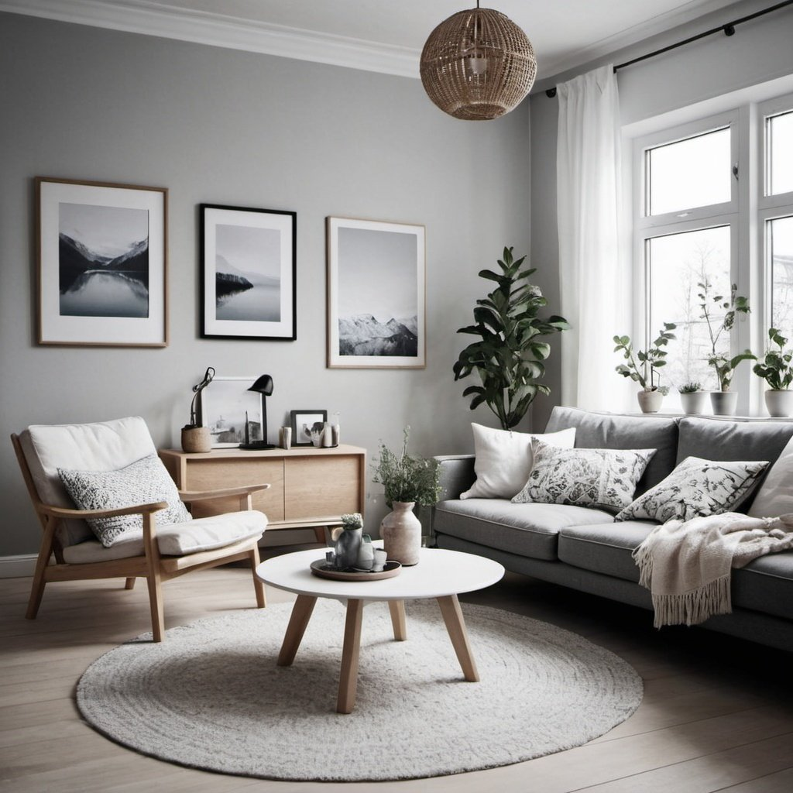

Styl skandynawski
Kultura skandynawska charakteryzuje się wieloma unikatowymi cechami:
- Minimalizm - funkcjonalne meble i przestrzenie o jasnych kolorach,
- Bliskość z naturą - wykorzystanie naturalnych materiałów takich jak drewno, kamień czy wełna,
- Hygge (w przypadku Danii) lub Lagom (w przypadku Szwecji), czyli koncepcje odnoszące się do szczęścia i równowagi - wnętrza w stylu skandynawskim
tworzą atmosferę sprzyjającą osiągnięciu dobrego samopoczucia mieszkańców.
Styl skandynawski jest doskonałym wyborem dla osób wykańczających dom dla rodziny. Jego cechy, takie jak prostota,
funkcjonalność i przytulność, czynią go idealnym rozwiązaniem dla przestrzeni, które mają być zarówno estetyczne, jak i
praktyczne dla całej rodziny.
Dostęp do mebli w stylu skandynawskim jest obecnie dość szeroki, zarówno w tradycyjnych sklepach meblowych, jak i w
sklepach internetowych.
Jasne, stonowane kolory charakterystyczne dla tego stylu tworzą atmosferę spokoju i harmonii, co może być
szczególnie ważne w domu, gdzie każdy członek rodziny szuka miejsca do wypoczynku i relaksu po dniu pełnym
aktywności.
Ponadto, naturalne materiały, takie jak drewno i len, dodają ciepła i przytulności do wnętrz, co sprzyja budowaniu
atmosfery rodzinnego ciepła i wspólnoty.


Dywany
Oto kilka ogólnych zasad, które warto wziąć pod uwagę podczas wyboru dywanu do przestrzeni:
- Rozmiar: Dobierz dywan odpowiedniej wielkości do pomieszczenia. Za mały dywan może sprawić, że
przestrzeń będzie
wyglądać nieproporcjonalnie, natomiast za duży może przytłoczyć pomieszczenie. Zwróć uwagę na układ mebli w
pomieszczeniu i dopasuj dywan do tego układu.
Na przykład, dywan pod stół w jadalni powinien być wystarczająco duży, aby umożliwić przesunięcie krzeseł bez zahaczania
o krawędzie.
- Styl: W tradycyjnych wnętrzach inspirujących się stylem skandynawskim pasować będą bardziej dywany o
ozdobnych wzorach lub orientalnych motywach.
- Kolor: Dobierz kolor dywanu, który harmonizuje z pozostałymi elementami wystroju pomieszczenia. Możesz
wybrać dywan, który dopasowuje się do koloru ścian, mebli lub dodaje kontrastu, aby stworzyć interesujące akcenty.
- Materiał: Wybierz materiał dywanu odpowiedni do warunków użytkowania i preferencji osobistych. Na
przykład, we wnętrzach
o dużym natężeniu ruchu warto rozważyć dywan z trwałego i łatwego w czyszczeniu materiału, podczas gdy w sypialni może
być mile widziany miękki, przyjemny w dotyku dywan.
Oświetlenie
Wnętrza w stylu skandynawskim cechują się prostotą, funkcjonalnością i przyjemną atmosferą, dlatego odpowiednie
oświetlenie odgrywa kluczową rolę w ich kształtowaniu. Inwestycja w wysokiej jakości, odpowiednio dobraną i stylową
oprawę oświetleniową może znacząco podnieść estetykę i komfort użytkowania pomieszczeń. Oto dlaczego warto zainwestować w
odpowiednie oświetlenie w tego typu wnętrzach:
- Dostępność światła: Naturalne światło jest preferowane, dlatego warto maksymalizować ilość
dostępnego światła dziennego poprzez duże okna i przepuszczające światło zasłony.
Lampy o ciepłym świetle: Wybór lamp o ciepłym świetle może dodać przytulności i przyjemnej atmosfery do wnętrza. Lampy
stołowe, wiszące oraz kinkiety z ciepłymi żarówkami są doskonałym wyborem, aby stworzyć miłą aurę w pomieszczeniu.
Lampy designerskie: W stylu skandynawskim często wykorzystuje się lampy o minimalistycznym, nowoczesnym designie. Lampy
projektowane przez renomowanych projektantów mogą być zarówno funkcjonalne, jak i dekoracyjne, dodając charakteru i
stylu do wnętrza.
Regulacja intensywności światła: Możliwość regulacji intensywności światła jest istotna, zwłaszcza w przypadku
oświetlenia głównego. Łącząc różne źródła światła i regulując ich intensywność, można dostosować atmosferę pomieszczenia
do różnych potrzeb i okoliczności.
Lampy z naturalnymi materiałami: Lampy wykonane z naturalnych materiałów, takich jak drewno, rattan czy lśniące metale,
doskonale komponują się ze stylem skandynawskim. Dodają one ciepła i przytulności do wnętrza, podkreślając jego
naturalny charakter.
Oświetlenie punktowe: Warto również rozważyć oświetlenie punktowe, które może być wykorzystane do podkreślenia
konkretnych elementów dekoracyjnych, takich jak obrazy, rzeźby czy rośliny.